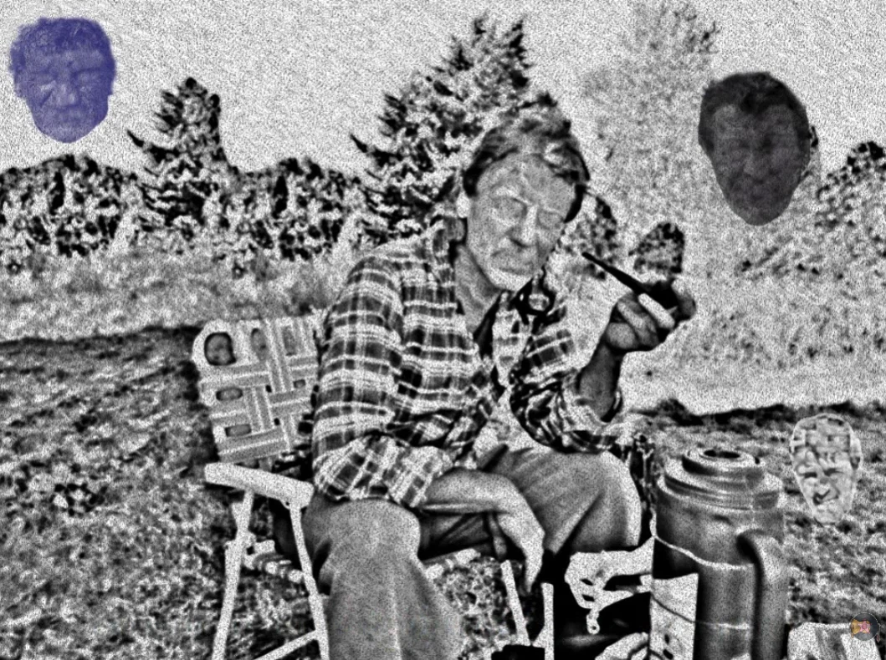
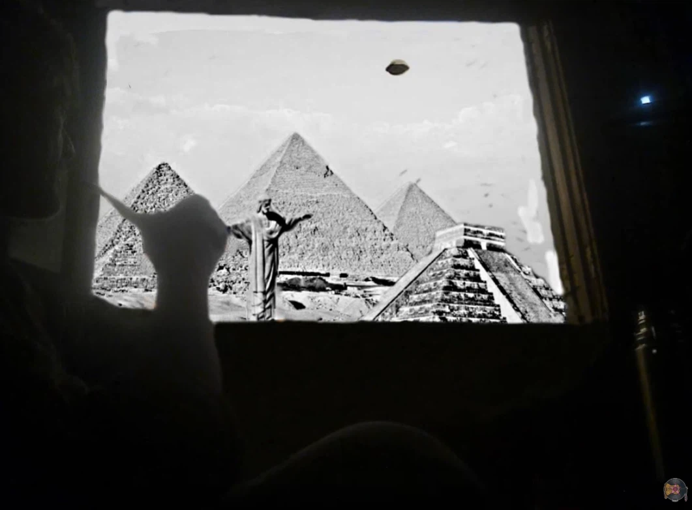
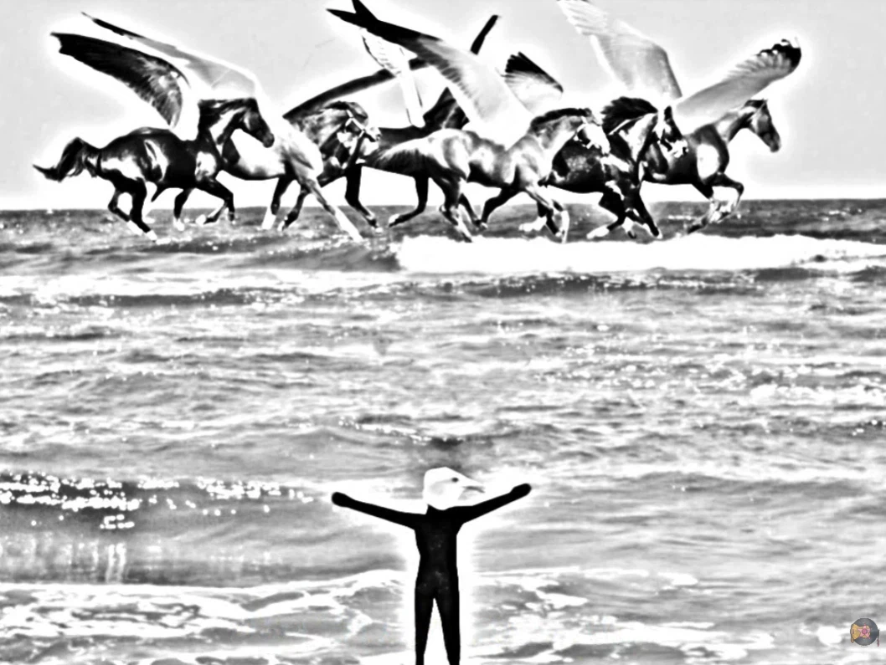
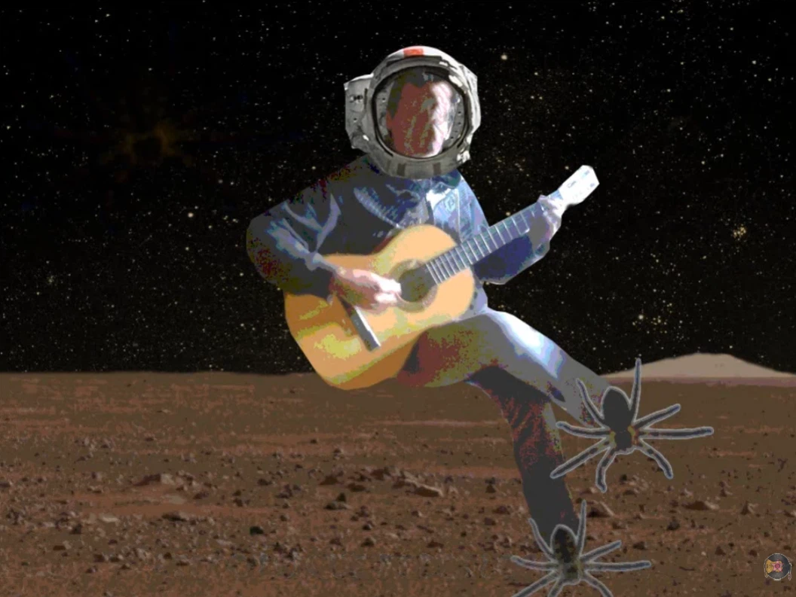
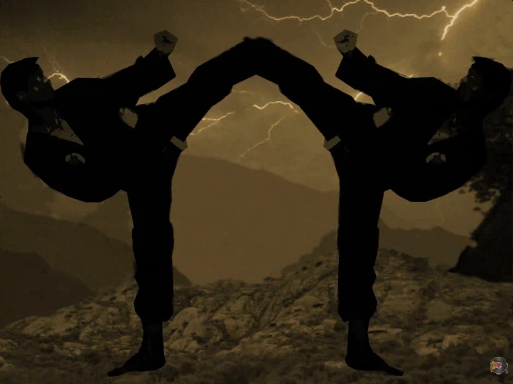
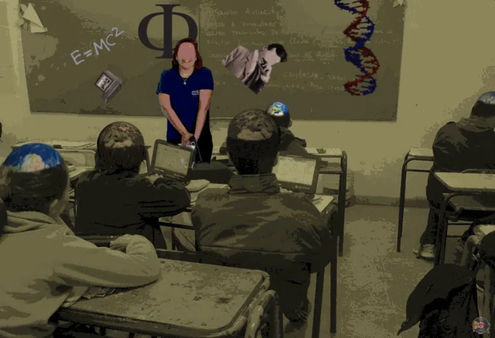

Mrs Pivs
After seeing my six-year romantic relationship completely shattered, I decided to return to my old home, my parents' house, in December 2012. My father fell ill with cancer and survived by a miracle, though he remained in critical condition. From that, a spark of something—perhaps a breaking point—made me grab the guitar and begin creating music.
March 30, 2013 arrived; it was my father’s birthday. He was at my grandmother’s house undergoing rehabilitation because he couldn't climb stairs. I left work and headed there, where a few relatives had gathered. After eating, laughing, taking photos, and singing Happy Birthday (where everyone shed tears), my father stepped out for a few minutes because he was so overwhelmed with emotion that he couldn't speak. Everyone was crying, including him... I hadn't seen him cry in a decade. When he composed himself and returned, I said: "Well, I’m going to play a song I wrote"... Mrs. Pivs.
Lyrics
Mrs. Pivs, what worries you is killing you
Mrs. Pivs, what you seek is inside of you
Mrs. Pivs, there are no good or bad, we just play differently
Mrs. Pivs,
So many dreams to fulfill so much life to enjoy,
no more putting things off,
it is time to realize
that your tomorrow is today.
Mrs. Pivs, loving your family is human,
Mrs. Pivs, but aren't we all brothers?
Mrs. Pivs, is it a sin to make love to the universe?
Mrs. Pivs,
Isn't an Iraqi's life worth just as much?
Who are you to judge?
Your spirit won't stop screaming the only formula for love:
"Start by loving yourself."
Mrs. Pivs, I know it is hard to understand,
Mrs. Pivs, your mind is what creates heaven and hell,
Mrs. Pivs, you are everyone and everyone is yourself,
Mrs. Pivs.
If a video can make you laugh,
and a song make you cry,
it is time to think of everything you can achieve
with imagination.
If a video can make you laugh,
and a song make you cry,
it is time to think that you can change the world
with imagination.
I am going to delve into each part of the lyrics because they truly possess great depth and philosophy, viscerally reflecting my wounded way of seeing things. I want to clarify in advance that I will be basing these explanations on a journal I wrote back then, so there are likely many viewpoints that I no longer share (do not forget that thirteen years have passed since then).

Mrs. Pivs,
Originally, the song said "Hey, Mrs. Pivs"... people ask me, "Who is Mrs. Pivs?"... in reality, that is the least important thing about the song... Pivs is my father, it is you, it is me, it is everyone. The origin comes from the name of a dog in the neighborhood that attracted dozens of other dogs when she was in heat, and we had jokingly nicknamed my father with that name (we used to tease each other with those kinds of biting jokes). In a way, as time passed, the name had become an affectionate nickname that no longer had anything to do with its origin.
what worries you is killing you
The original line actually said: "...this world is killing you...". But the song was going to be somewhat depressive, speaking of the world's sorrows and how they destroy a person. Then I thought, "do I really want this?"... and truth be told, I also remembered my father saying: "...everyone brings problems, but no one brings solutions...". That was the moment I began to redirect the composition, and to look in a different direction in my life as well. I wanted my entire body of work to take a new path and meaning; I no longer wanted to speak of suffering or play the victim. The ego had taken many hits, and I began to want to help and to open eyes—not just my own, but the world's. The new phrase refers to the fact that his worries, his way of seeing the world, had brought him to the brink of death. In reality, I suggest that this circumstance is nothing more than a coincidence, but one doesn't truly need to be dying to realize that our mundane problems blind us and destroy us day by day; they make us suffer and distance us completely from happiness. And the worst part is that we focus our concern right there... some people still ask me, "if you don't worry, how do you solve things?"... everyone worries, but one must take action, because worrying achieves nothing.
Mrs. Pivs, what you seek is inside of you
One seeks answers all the time, creating a world full of worries—all of it self-made. One creates that and then looks for solutions outside. So, the problem lies in what one builds morally, socially, and ideologically; if it doesn't work, if one sees that there is too much suffering caused by ideas that alienate us, why not destroy them and begin to build a new structure?. But no one wants to accept that they fought for 10, 20, or 40 years while being completely wrong, nor do they want to tear down their towers and rebuild a village, because people are full of pride, ego, and fear; they are terrified to see that society attacks their true way of being like a death sentence, so they believe that by being themselves they only become vulnerable. This makes them cling to that script they were given once upon a time, upon which they built themselves, and they won't let go of it for anything in the world. In short, their banal search ends up focusing on the exterior—the search for wealth, modifying the emotions of others, etc. Partly it’s the ego, and partly it’s not; the only thing a person truly seeks is to love and be loved, but they add so many layers to that search that, in the end, they lose all sense of it. That is why what one sees—one's perspective—is constructed from within... therefore, the answer is not out there, it is inside. I would call that the search for the self that the prophets speak of so much.

Mrs. Pivs, there are no good or bad, we just play differently
This is seen more clearly with everything I explained in the previous point... at their origin, the only thing a human being wants is to love and be loved. We all adopt different ways of seeking that love, which over the years slightly deforms the original search, adding layers, masks, or whatever you want to call them. In the end, having a coffee and sharing it with someone ends up being a "pleasure," which is actually the love of sharing camouflaged as a cultural custom. Or making music and wanting to spread it to the world, to be heard, to draw attention, is wanting to give and receive love. I want to be heard... I don't care about winning a million dollars; if music leaves me with a plate of noodles, that’s fine. But I make music for myself—for myself and for the world. If no one ever listened to my songs, all motivation would be lost, because I can love myself and that is very beautiful, but we are born accustomed to also receiving the love of another. In fact, just as Aristotle did, the human being continues to be defined as a social being, and we are born with that natural imposition to be social, to be part of a culture or politics. We are forced to socialize. The point of all this is that, in order to reach that primitive love through different transformations, one adopts various paths, various policies, various morals. Depending on each person's point of view, some may be good, others bad, but in their essence, the only thing the human being wants is love. That values have corrupted their way of being to a selfish level is another matter, but that is what this part of the song refers to; it’s not that you are touched by a wand of divinity and goodness while the other is a child of Satan, we simply "play the game in a different way."
So many dreams to fulfill
so much life to enjoy,
no more putting things off, it is time to realize
that your tomorrow is today.
In addition to the song being spiritually and emotionally deep, I wanted it to have a certain natural quality—to possess a certain ease of understanding, at least regarding the alternative or point of view it proposes. It simply and clearly exhibits the same thing the poet Horace would have said in his time: "Carpe diem." Or as Borges would say: "moments." You can look at the world however you like, aim wherever you want, or believe in whomever you choose, but the reality is that you are living a moment, and you are the master of choosing what to do with that moment; you can make the most of it, or throw it away and think that another moment will arrive (which is entirely uncertain, as no one has control over time). One tends to procrastinate, but I don't truly know what the need for it is, and I include myself among those who do this. I have to eat and feed my daughter. My morals and the imposed social obligations are postponing other things I could do with total freedom if I were to break that framework. Some would see that as irresponsibility, but it would also be irresponsible to teach my daughter to surrender to life, to stop loving, and to stop chasing her dreams. To teach something, you must be the example. As I heard once a long time ago: "to demand from another, first demand from yourself."

Mrs. Pivs, loving your family is human,
Mrs. Pivs, but aren't we all brothers?
This speaks clearly of a social construct in the first instance. Long ago—who knows how long—a family tree was culturally imposed on us that we must respect according to certain criteria. You can love your wife, make love to her, feed her, while you look at the rest of the world from a distance. This is something imposed upon us; we are all playing the same game, we are humanity without humanity. Why individualize ourselves so much? We form a society, but we fight against our own race. This can be seen clearly in games: can the human mind create supercomputers and yet cannot create a game where everyone wins? Is it necessary to compete, to kill each other, to create countries, to be part of something, of a religion, and to feel better than someone else? One keeps hearing Boca, River, Right, Left, Catholic, Jew, mother, stranger... we are all made of the same thing. Perhaps in a life-or-death situation, we are given a choice (to be extreme): "Would you rather your mother live, or that man selling peppers at the supermarket door?" Most will save their mother (I believe), but that seller's family or his friends barely know your mother, and if they were asked the same question, they would save the seller. Everyone would save their mother. This is how they accustom us to assigning values in a very selfish way, because I am not asking you to love that seller more than your own mother, but both are people. So, neither black nor white: love everyone equally, as it should be. That is why in the second part of the phrase I mention the "...all brothers..." part; even Jesus Christ says it in the Bible, and everyone forgets it.
Mrs. Pivs, is it a sin to make love to the universe?
Here, I was much more drastic. To reaffirm the concepts I have been presenting, and in a much cruder form of philosophy, I began to think: "Making love is one of the many deeply profound ways to show love." So, why does one limit making love only to one's spouse? I am not talking about infidelity or promiscuity—don't get me wrong. What I mean is that it is clear that couples were socially constructed; it is scientifically explained. In fact, if we look at the few tribes that still exist today, we can find traces of the true origin, where everyone loves each other without discrimination. I have explained the true essence of this part of the song to only a few people, and they told me I am a "fucking madman." So far, no one has understood me. Wrong or not, that depends on each person's point of view. I cannot change my way of thinking just because the majority thinks differently; after all, if we went by what the majority thought at a given moment in history, the Earth would still be flat.

Isn't an Iraqi's life worth just as much?
Who are you to judge?
Sometimes people mock me for this part; they laugh. At this point in the song, I always make it more natural and raw, so that anyone, no matter how blind they may be, can visualize it. It refers to the deaths in Iraq, although it doesn’t necessarily have to be Iraq; it could be Israel, Los Angeles, or any part of the world. It doesn’t necessarily have to be deaths from war, either; it could be a car accident or a heart attack. My point is that, as I stated before, if you have to choose between one human and another, your corrupt subjectivity always intercedes. You become someone who watches the news, sees 100 deaths in Syria, turns it off, and goes to work thinking, "well, at least it wasn't my family." But those who died are just as human as your family, and they are family among themselves. And if we base this on Christianity, those you are ignoring are your brothers and sisters. That is why people wave the flag of "not judging" while they decide who is worth more and who is worth less when it comes to dying.
Your spirit won't stop screaming the only formula for love: "Start by loving yourself."
I will exemplify it in the most understandable way possible. If you are an apple tree, you cannot bear pears. At most, you can "emulate" being a pear tree, but it will never be your own nature. In pure essence, you cannot give love if you do not have love. If you hate yourself, putting others first and forgetting about yourself, that is not truly love. To give something, you must first have it inside you; otherwise, it is like showing a tightly clenched, completely empty fist and saying, "inside here, I have love for you." At some point, that falls apart; it tends to fail because it has its own nature that makes it very weak, and any value can corrupt or collapse it. You are playing a character that you truly are not; the player you really were from the beginning is still on the bench shouting at you, "hey brother, that’s not what you really want, I’ve told you your whole life; what you want is much simpler, stop complicating things so much and listen to me for a bit." But we ignore it. And when I say we ignore it, I mean we ignore ourselves. That is why there are people who give, but inside they only expect to receive or to feel that they will be given love back, or that their image is being elevated. Radical or extreme believers are an example of this—for instance, extremist vegetarians or extremist religious people. In many churches, they use the guilt card, urging you to join them because it is the path to salvation. If you read the Bible, Christ said that one should pray behind closed doors, trying not to show off. But people want to be loved, they want to be seen, and when they adopt one of these false masks, they offer a completely empty, clenched fist, because they do not love themselves. They believe God loves them, the church loves them, Buddha loves them, the animals love them, but you don't love yourself... that is not love, it is merely scenery.

Mrs. Pivs, I know it is hard to understand,
Mrs. Pivs, your mind is what creates heaven and hell,
I truly wish it were very easy to understand everything I want to express with my heart, or essence, or whatever it may be. In fact, it is easy to see because it is in front of us all the time; if people didn't fill us with ideas or if we didn't let ourselves be carried away by fears, political constructs, etc., one could see it clearly without the slightest effort, because everything I am proposing is pure nature. Thus, what is easy to understand becomes difficult for the human mind. It is in one's hands to see the "glass half full or half empty"; it is up to each person to wake up every morning with joy or totally discouraged; it is up to us to enjoy or suffer, to live or survive. That is why ideas as significant as heaven and hell, or love and suffering, which are so opposite, depend on one's mind—that is, it depends on your mind where you find yourself at this moment. I could easily tell you that this world full of butterflies, beautiful beings, green grass, the wind through the trees, the sun radiant in your eyes, and the clouds in the spectacular color of the sky creating the best works of art you've ever seen, is the true heaven... or I could also tell you that waking up at 7 a.m. every day, having heartburn, not having enough money to do what you so ambition, having to see your oppressive boss, seeing how the government reaches into your pockets, etc., is the true purgatory or hell... and I am talking about the same place. Because while you go to work with your boss, the butterflies are still dancing somewhere, and while the electricity and gas bills are making your head spin with stress, the sun above you continues to shine.
Mrs. Pivs, you are everyone and everyone is yourself,
At the time in my life when I wrote the song, I was also reading The Way of the Wizard by Deepak Chopra. In some respects, I quite liked the perspective it presented. In reality, it was nothing new; it has always been said that everything is one, the idea that everything is light, everything is a single energy, everything is one. The samurai wondered if everything was actually a dream, and Merlin wondered if the dragonfly dreamed of him or he of the dragonfly, because both were part of the same world, of the same dream—they were one. The earth moves with trees, with lives; existence, the universe, everything is like a mechanism, atoms, everything is as if it were part of a clock—of one. To be clearer, as I said before, you are Mrs. Pivs, my father is Mrs. Pivs, my mother is Mrs. Pivs, I am Mrs. Pivs. When I played the song on March 30th, you can see everyone crying; in reality, the song is nothing more than a simple tool. I didn't make them love; they always loved. In fact, that beautiful moment they experienced was a product of themselves, of their own essence; the song only held their hand and led them along the path to the point where everyone could be themselves for an instant. We were all one, because there was no depressed aunt, no brother on drugs, no sister without a job, no father in rehabilitation. We were all love, we all loved; there were no objectives, no sadness, no ambitions, no selfishness. The world was not built for individuality, because when people die, people are born, and the world keeps spinning in unity; trees provide oxygen, and everything is a circle, a mechanism. If something happens to one person, in a certain way, it affects us. If one person's love is affected, it affects us. That is why it is so difficult to have one's own consciousness in this society; the majority suffers and has an opaque perspective of the world. Pain turns them into victims or oppressors, and one can love with all their heart and their ideas and nature can persist, but it is very controversial to encounter a world like this and fight to change it without violence when the majority uses violence even to educate. People do not like it when you think differently; no one likes to see their ideas under attack.

If a video can make you laugh,
and a song make you cry,
it is time to think of everything you can achieve
with imagination.
This is where the entire song is summarized. I am going to detail a personal experience regarding what I have always believed: I created DigitalGames (essentially a humor show) or did Stand Up because I thought that you can have anyone watch a video—it could be the most evil man in the world, the richest, the poorest, your cousin, etc.; ultimately, when you make someone laugh, in a way, they forget who they are. They stop having ambitions, stop living in that mediocre world they created themselves. They stop being a hangman or a frustrated person, or whatever it was they were pretending to be. Humor is another form of loving if applied in a certain way, though one must know how to use it well. So, we have a bunch of people in front of a screen laughing, returning to a state of full innocence, even crying with laughter, without bad intentions. Sometimes we can even make people with depression, people who think of nothing but ending their lives, laugh for 5 minutes and forget everything. In the times I was making those videos, I believed that if I could make at least one person laugh and change their world for 5 minutes, then my life gained total meaning. The same happens with music; one cannot impose something or force another to do a certain thing, or get inside their mind and change their essence. But one can show them a "path," a "way." One can show them experiences or make them live them, which is much better, and one can also create their own world, and partially or temporarily allow another to inhabit it for a while. That is why, for a few minutes, you feel like Mrs. Pivs, but in one way or another, the mold of life itself is in your hands.

If a video can make you laugh,
and a song make you cry,
it is time to think that you can change the world
with imagination.
We belong to a world made by others—one that is somewhat corrupt and based on capital interests. But it is what someone once showed us, and it continues to move forward according to those interests. If we can modify our way of being, our own world at our will, and make others see our world—to "alienate" them on a path toward love—then we can change the world. That is the first track from the album Asma Mental, an era where my life as an artist, or perhaps my journey of getting lost in my own mind, begins.
The images in the video and those shared here are real photos of my family, edited by me at a time when AI technology didn't even exist, so everything had to be done by hand. They all represent different analogies; for example, the mirrored image of my father in his karate suit is him fighting against himself... facing oneself is one of the most difficult battles. I used the photomontage technique, which verges on Dadaism, to experimentally dislodge a piece that breaks aesthetic norms in pursuit of expression.